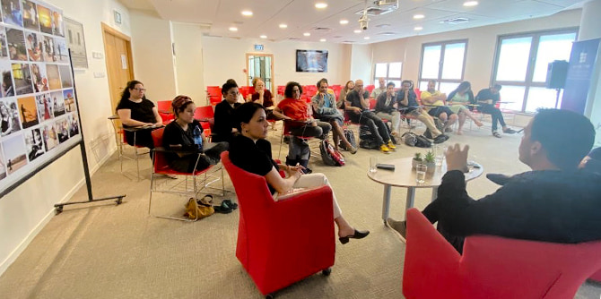

השיחה עם אלמוג בוקר ורועי כ״ץ, שהנחתה לינור אללוף, עמיתת התוכנית, התבססה על שלושה צירים ועל הקשר שבניהם: אקטואליה, תרבות ותקשורת. השיחה נפתחה בדילמות שהעלה הסיקור של מבצע "שומר החומות" ובקשיים שמעלה סיקור של אקטואליה בכלל. השניים נשאלו בין השאר על כמה מהאתגרים האתיים שהסיקור התקשורתי מציב: כיצד נוהג כתב לנוכח דרישות סותרות: מערכת הדורשת ממנו (באוזנייה) להיכנס לבית שספג פגיעה ישירה, בשעה שצו מצפונו תובע ממנו להימנע מחדירה כזו לרשות הפרט? כיצד אפשר לסקר אירועים מורכבים ורבים כל כך עם מעט כתבים בשטח? איך מטפלים באתגרי סיקור בשטח שבו כל הזמן יש נפילות?
בהמשך המפגש עלתה סוגיית סיקור התרבות בדרום – כיצד נפגעה התרבות המקומית עם סגירת המקומונים? מהן החלופות? כיצד חודרים לסדר היום הציבורי לנוכח פעילות תרבותית אינטנסיבית שמתרחשת במרכז?

לנוכחים – עמיתי מחזור ג' של תוכנית מנדל למנהיגות תרבות בנגב וכתבים אשר צמחו ופועלים במרחב הדרומי – ברור כי בדרום בכלל ובבאר שבע בפרט יש עשייה רבה וסצנה תרבותית פעילה ושוקקת, בחלקה אף ייחודית למקום. ואולם, כוחו של המרכז בולט במיוחד בנושאים של תרבות, חשיפה אליהם ויצירת ההד התקשורתי סביבם. השיחה נסבה גם בהיבטים פרקטיים של תקשורת והבנת "כללי המשחק" בה: מה ייכנס לעיתון ולאילו חומרים אין סיכוי? איך נכנסים לתקשורת?
הדיון עם העמיתים והאורחים – שניהם אנשי תקשורת שנולדו וגדלו בבאר שבע והחלו את דרכם המקצועית בתקשורת בעיתונות הדרומית המקומית – היה מלמד ומעמיק במובנים רבים. הודגשה ההכרה כי חלק ניכר מפעילות תרבות יש להעביר באמצעות התקשורת, ולכן היוצרים והיזמים בתחום התרבות נדרשים להשקיע בזירה זו מאמצים ואף להכיר את אחורי הקלעים שלה, חרף הנטייה האופיינית של העוסקים בתחום להתרחק ממנה. זהו, כך סיכמו המשתתפים, אחד מתפקידיה של מנהיגות לתרבות.
{kind=link}